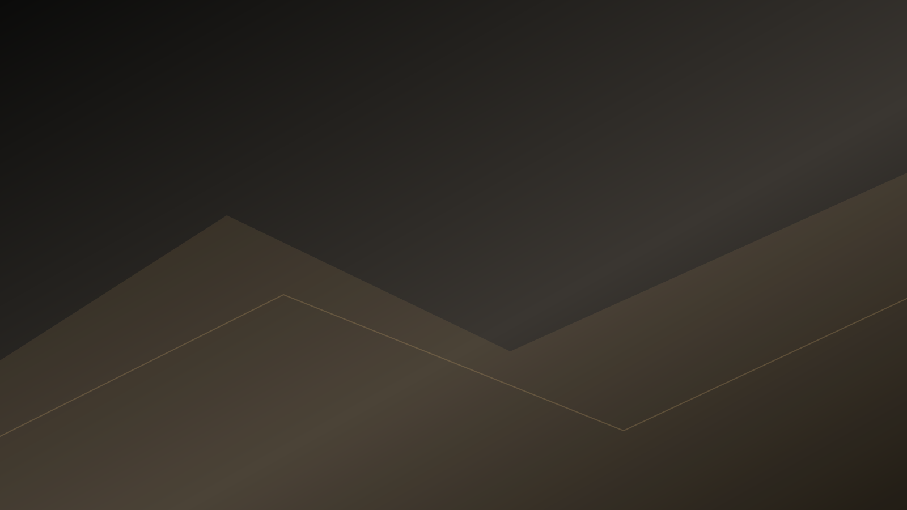
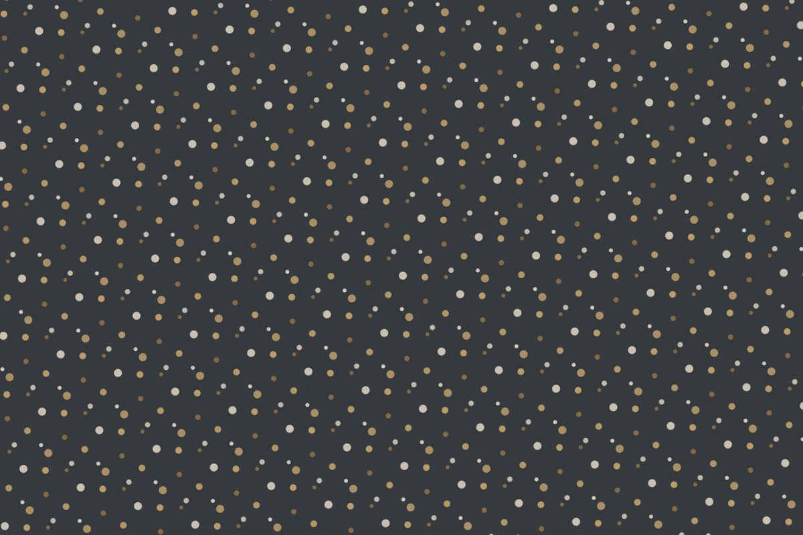
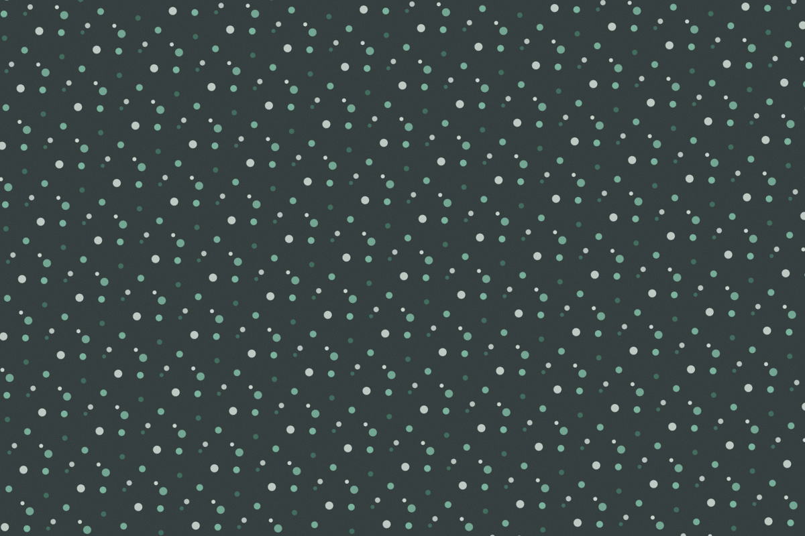
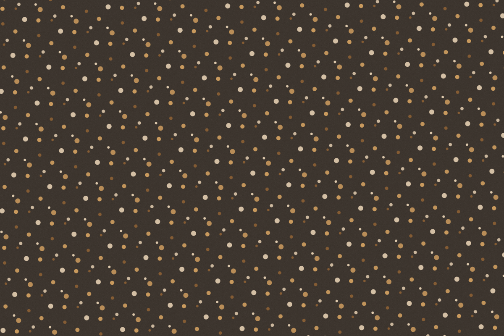
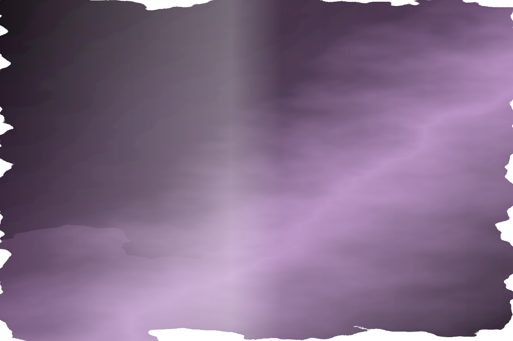
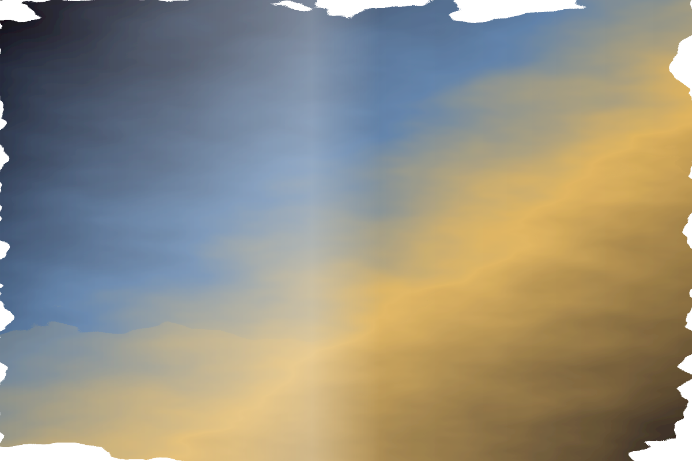

Installation résidentielle.
Un garage, un sous-sol ou un espace de vie qui impressionne, résiste au quotidien et prend de la valeur.
Le plancher que votre maison mérite.
Nos équipes transforment le béton terne en une surface lustrée, durable et facile d'entretien. Préparation professionnelle, produits Artemis System et finition impeccable : vous profitez d'un plancher prêt pour des années.
Résiste au sel et à l'huile
Idéal pour les hivers et les garages actifs.
Facile à nettoyer
Une surface sans joints, sans poussière de béton.
Antidérapant
Les flocons offrent une adhérence rassurante.
Valorise la propriété
Un garage qui fait bonne impression à la revente.
Où nous intervenons.
Une finition pour tous les goûts et les besoins
Finition flake

Flake 2
Flake 3
Flake 6Finition métallique

Veinage
MulticoloreCinq étapes, zéro surprise.
- 01Visite et évaluationAnalyse du béton, de l'usage et de vos attentes.
- 02Soumission détailléeSystème recommandé, prix et échéanciers clairs.
- 03PréparationMeulage, réparation des fissures et nettoyage.
- 04ApplicationCouche de base, décor et finition.
- 05Remise et suiviInspection finale et conseils d'entretien.
Projets résidentielles récents.
Obtenez un estimé gratuit en 60 secondes du prix de vos travaux
Pour l'application de l'époxy à domicile (résidentiel seulement)
Je veux un estimé gratuit des travaux maintenant →
Vos questions, nos réponses.
AUTRES SERVICESC'est un revêtement de résine appliqué en plusieurs couches directement sur votre dalle de béton. Une fois durci, il forme une surface continue, sans joints, étanche et beaucoup plus résistante qu'une peinture à béton.
Partout où il y a une dalle de béton : garage, sous-sol, atelier, salle mécanique, commerce ou entrepôt. Pour les surfaces extérieures (balcon, perron, entrée), nous utilisons un système conçu pour résister aux rayons UV et aux écarts de température.
Non, s'il est bien conçu. Le fini flocons offre déjà une texture naturelle, et nous pouvons ajouter un agent antidérapant dans la couche de finition pour les zones exposées à l'eau ou à la neige.
Non. Les fissures, les trous et les éclats sont réparés avant l'application du revêtement. Si une fissure est encore active (la dalle bouge), elle peut réapparaître avec le temps : nous vous le disons dès l'évaluation.
Nous mesurons le taux d'humidité du béton avant de commencer. S'il est trop élevé, nous appliquons un apprêt pare-vapeur conçu pour bloquer l'humidité. Une dalle humide non traitée est la première cause de décollement.
Un système professionnel posé sur un béton bien préparé dure généralement de 10 à 20 ans en usage résidentiel. La durée de vie dépend surtout de la préparation de la dalle et de la qualité de la couche de finition.
Oui. Le revêtement est étanche : le sel de déglaçage, le calcium, l'huile à moteur et l'essence restent en surface et s'essuient. C'est l'une des principales raisons de faire un garage en époxy au Québec.
Un coup de balai et un lavage à l'eau tiède avec un savon doux suffisent. Évitez les nettoyants acides, le vinaigre et les savons qui laissent un film. Au printemps, rincez les résidus de sel et de calcium laissés par l'hiver.